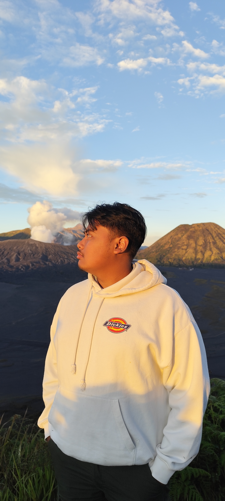

Saya membantu membuat website landing page dan company profile sederhana untuk bisnis atau personal.
💡 Siap membantu bisnis kecil & UMKM go digital

Website landing page modern dan responsif untuk kebutuhan promosi produk. Dirancang untuk meningkatkan daya tarik visual dan membantu meningkatkan konversi penjualan, cocok untuk UMKM maupun bisnis online.
🔗 Live DemoWebsite profil bisnis dengan desain profesional untuk meningkatkan kepercayaan pelanggan. Cocok untuk jasa, UMKM, maupun personal branding agar tampil lebih kredibel di dunia digital.
🔗 Live DemoMulai dari Rp 150.000
Mulai dari Rp 300.000
Saya adalah frontend developer yang fokus membuat website sederhana, landing page, dan tampilan modern menggunakan HTML, CSS, JavaScript, dan React.